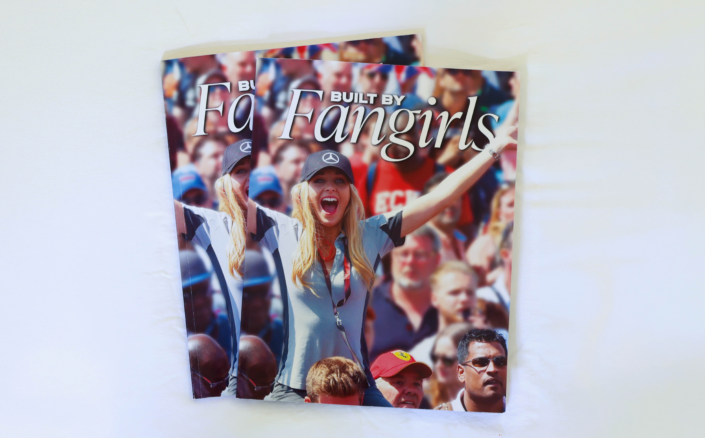
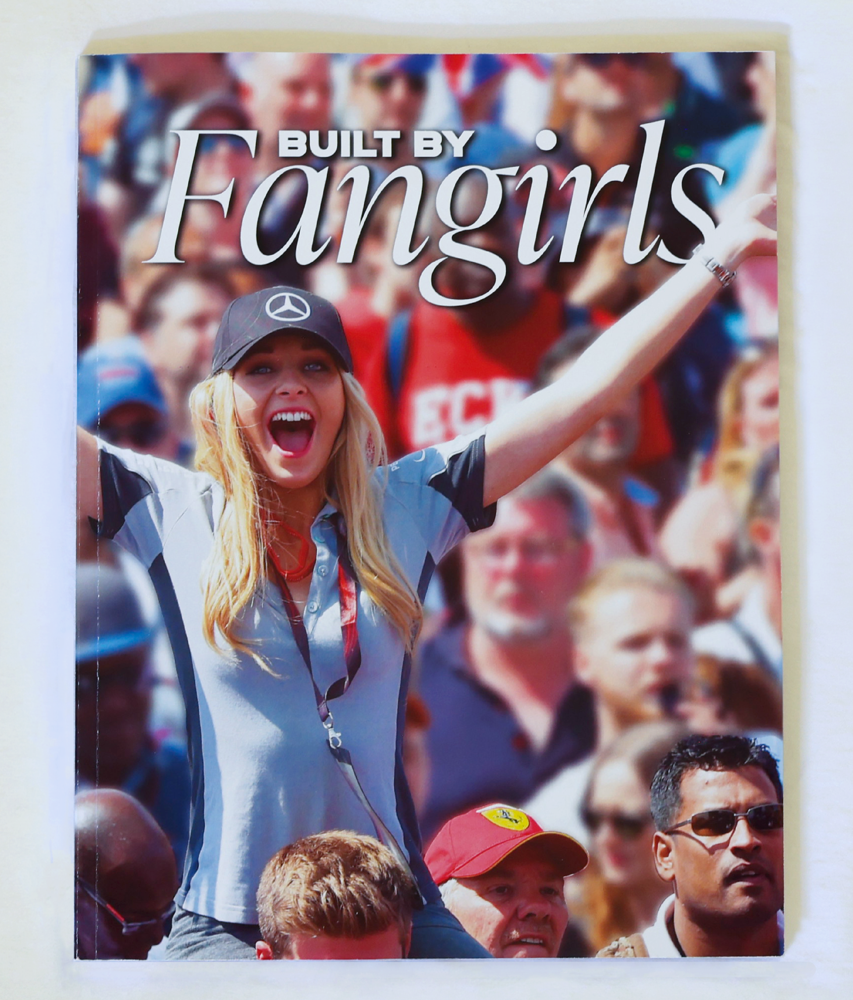
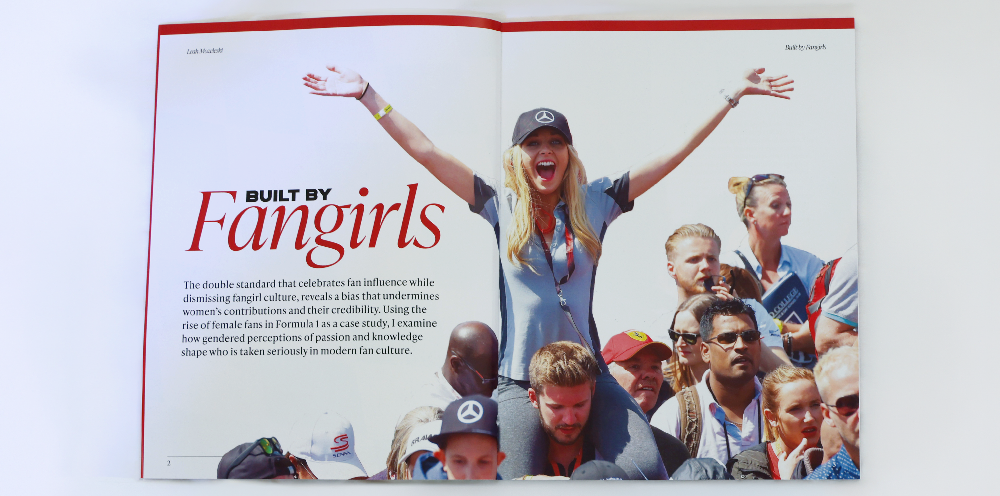
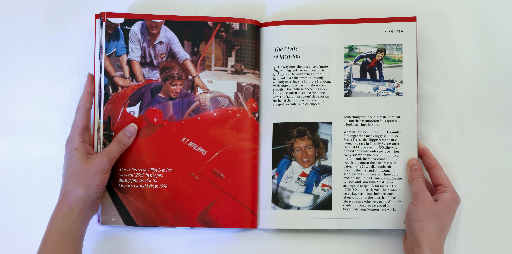
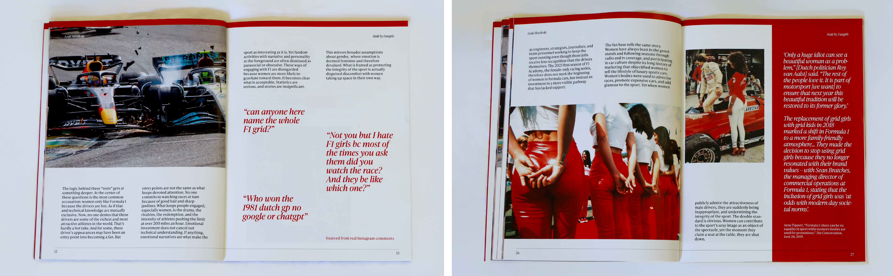
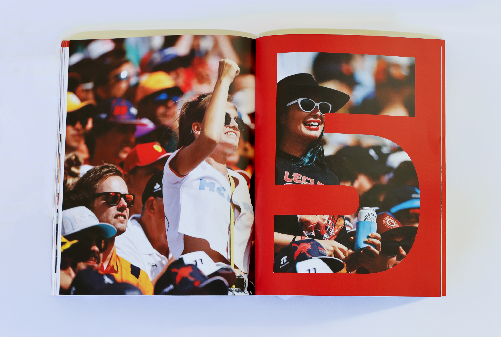
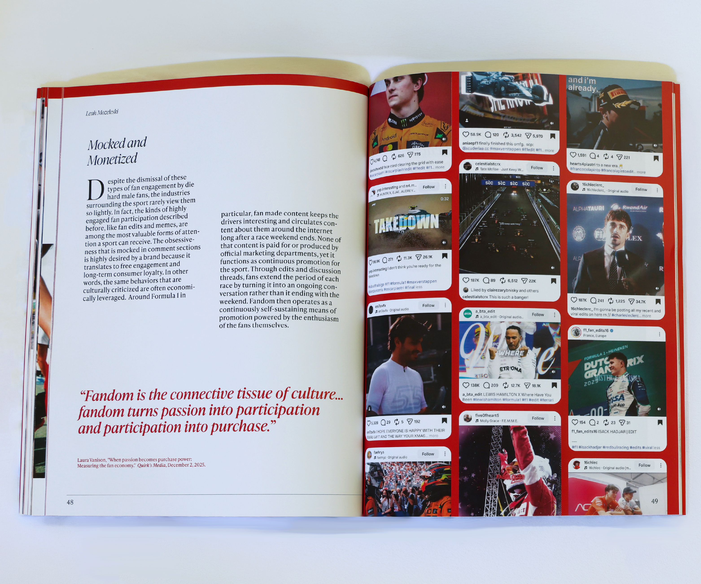
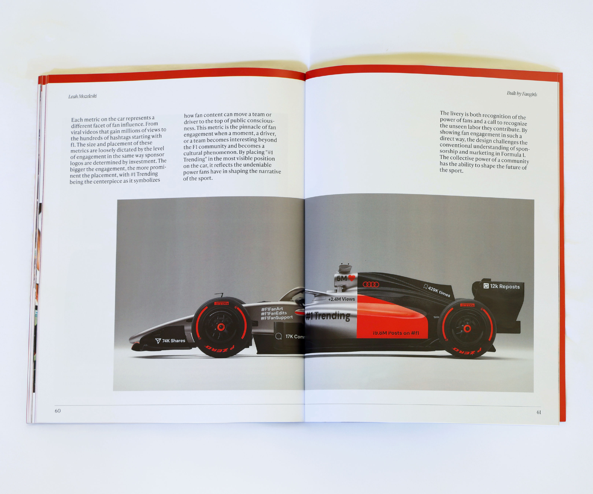
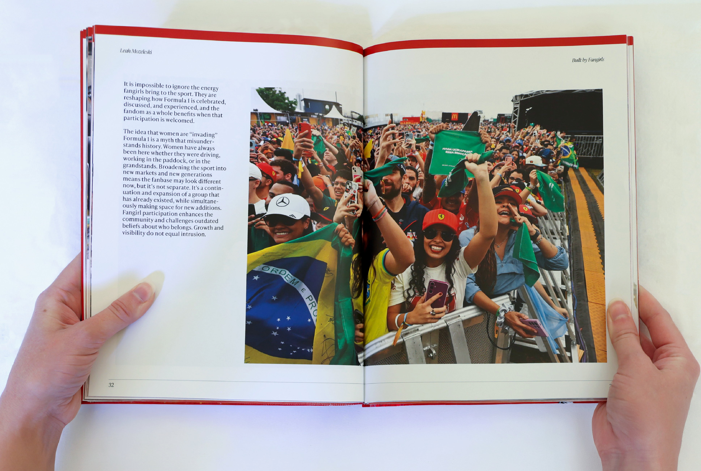

The double standard that celebrates fan influence while dismissing fangirl culture shows a bias that undermines female contributions and credibility. Through editorial writing, sourced articles, and speculative design, I examine how gendered perceptions of passion and knowledge shape who is taken seriously in modern fan culture, using the rise of female fans in Formula 1 as a case study.









drag or click on the edge to flip through the full work
Website Hand Coded by Leah Mozeleski
Best Viewed on Desktop